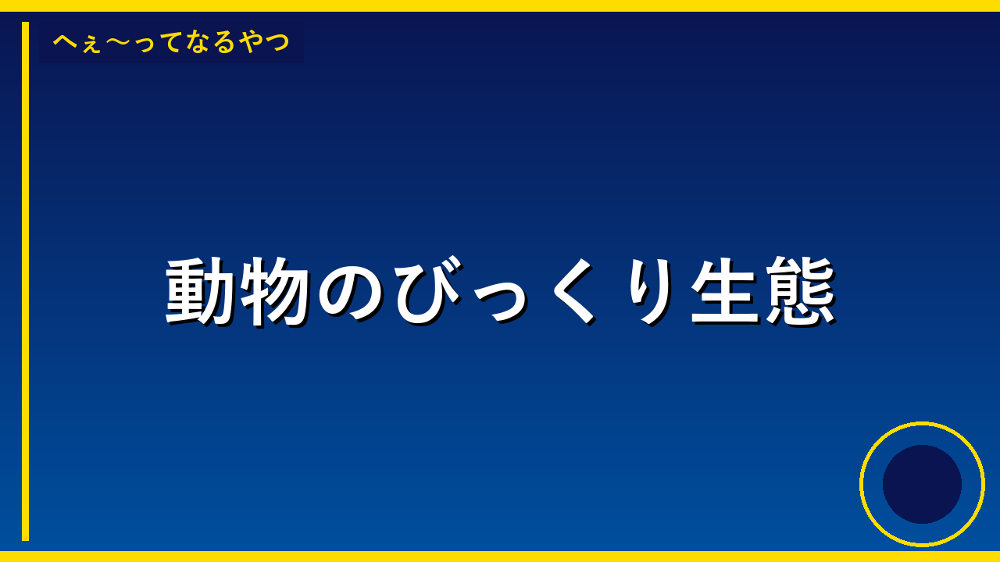

300円台 ファミマル冷凍麺の魅力
ファミリーマートの「ファミマル」という商品ブランドで、300円台で買える冷凍麺が5種類売られています。編集部がパスタやうどん、焼きそばなど5つの冷凍麺を食べ比べてレビューしました。この記事では、安くておいしい冷凍麺の魅力について、実際に食べた感想とファミマの担当者へのインタビューを通じて紹介しています。

相模原で男子高校生が死亡した事件 少年らの「思い込み」が発端か
神奈川県相模原市で男子高校生が亡くなる事件が起きました。この事件で捕まった少年たちは、自分たちのバイクが盗まれたと思い込んでいたそうです。しかし実は、バイクは盗まれていなかったのです。つまり、少年たちの間違った思い込みが原因で、大切な命が失われてしまった、とても悲しい事件だということがわかりました。

TBS「せっかくグルメ!!」10月4日放送回について呼びかけ「非難は控えて」
TBSのバラエティ番組「せっかくグルメ!!」の10月4日放送回で、高知でのロケ撮影中に女子中高生が店を選ぶことができず、別の女性が代わりに店を提案したことが話題になりました。番組側はこの出来事について説明し、協力してくれた人やお店に悪口を言ったり責めたりしないでほしいと視聴者に呼びかけています。テレビ番組が大勢の人に見られるので、出演者や関係者への誹謗中傷が起きないようにするための大切なお願いです。
IDCFクラウドへのランサム攻撃、495の企業・自治体に影響 一部には「復元難しい」との通達も
ソフトバンクの子会社が運営するクラウドサービスが、悪いコンピューターウイルス（ランサムウェア）に攻撃されました。この攻撃によって495の会社や自治体のデータが被害を受け、サービスが使えなくなったり、うまく動かなくなったりしました。このクラウドサービスを使っていた多くの企業や自治体は、大事なデータが失われる可能性があるため、今後の業務に大きな影響が出ることが予想されます。
富山県立大にまた不正アクセス 学生のMicrosoft 365アカウントから1092件の迷惑メール 送信は8月末
富山県立大学の学生のパソコンのアカウントが悪い人に乗っ取られてしまい、そのアカウントから1092件もの迷惑メールが勝手に送られてしまいました。これは、学生たちの個人情報が盗まれたり、悪い人がアカウントを悪いことに使ったりするおそれがあるので、とても危険です。大学は被害を受けた人に謝り、パスワードを変えるなどして二度と起こらないようにするつもりです。
IDCFクラウドへの不正アクセス、ランサムウェア攻撃と明らかに 運営会社が回答
ソフトバンクの子会社が運営している「IDCFクラウド」というコンピュータのサービスが、悪い人たちによる「ランサムウェア」という特別な攻撃を受けて壊れてしまいました。このランサムウェアは、大事なデータを勝手に暗号化（読めなくしてしまう）して、お金を払わないと返さないと脅かすとても危険な攻撃です。このサービスを使っていた会社のデータが使えなくなってしまったので、お客さんの仕事に大きな迷惑をかけてしまいました。

阿部一二三が世界選手権5度目の優勝で日本男子単独最多記録を樹立
柔道の選手である阿部一二三さんが、世界選手権で5回目の優勝を達成しました。これは日本の男性選手の中で最も多い記録で、昔の有名な選手たちよりもすごいということです。阿部さんはオリンピックに選ばれるための大事な争いでも有利になりましたが、「まだ決まっていない」と気を引き締めて、これからも頑張ると言っています。

ジダン監督が革靴で神トラップ、54歳の技術にファンが絶賛の声
フランス代表の監督ジダンが、試合中のベンチ前で革靴のままボールを上手にトラップしました。54歳になった今でも昔のようなすごい技術を持っていることに、ファンたちが驚いて「お金を払ってでも見たい」などと褒める声がたくさんありました。この映像がSNSで広がったことで、ジダンはサッカーの名選手として今でも多くの人に愛されていることがわかります。

クロアチア・ビリッチ監督がククレジャの挑発的な振る舞いを批判
スペインとクロアチアのサッカーの試合で、スペインが逆転勝利しました。クロアチアのビリッチ監督は、試合中にスペイン選手のククレジャが挑発的な行動をして、相手を怒らせたことが悪かったと批判しています。ククレジャ本人は、クロアチア選手のペリシッチが赤いカード（退場）をもらったのは当然だと言っています。このように試合中の選手の態度や行動が、試合の結果に大きく影響することもあります。

やす子が初のマッチングアプリ「偽物と思われて出禁になった」
お笑いタレントのやす子さんが、初めてマッチングアプリ（恋人探しのアプリ）を使ったら、本物のやす子さんではなく偽物だと思われて、アプリから退会させられてしまったそうです。やす子さんは「誰か結婚してください！」とユーモアたっぷりに投稿し、ファンから応援のコメントがたくさん集まりました。有名人は本人確認が難しいので、このようなトラブルが起きることがあるということがわかりました。

「どこでも寝落ちしてしまう」福原遥の新婚生活に「懸念」か
有名な野球選手の久保建英さんと、テレビ女優の福原遥さんが結婚することになりました。二人の結婚は多くの人から祝福されています。しかし、福原遥さんには「どこでも寝てしまう」という癖があり、シャワーの最中や信号待ちの時でも眠ってしまうことがあるため、新しい夫婦生活がうまくいくか心配する声もあります。

水美舞斗＆山吹ひばりが出演「ヒルナンデス！」に驚きの声が広がる
宝塚歌劇団の水美舞斗と山吹ひばりという有名な女優さんが、テレビ番組「ヒルナンデス！」に出演しました。番組では、宝塚ならではの「かっこいい歩き方」を披露したり、食べ物の感想を言ったりしました。宝塚の現役の女優さんがテレビに出ることは珍しいため、インターネットでは「すごい」「びっくり」という驚きの声がたくさん広がりました。

“1人だけ助ける”ローグライトRPG『勇者パーティはぜんめつしました。』11月10日発売へ。仲間はヤバいし武器は使い捨て、やりくり必須の極限脱出劇
ゲーム会社が新しいゲームを作りました。このゲームは11月10日に売られます。ゲームの中では、勇者が1人だけ助かって、仲間たちは危ない状態にいて、武器もすぐに壊れてしまうので、やりくりしながら逃げ出さないといけません。このゲームは、限られたもので工夫して生き残る難しさと面白さを体験できるゲームとして注目されています。

『Escape from Tarkov』のCustomsに「柵乗り越え用の足場」出現、もう迂回もギリジャンもしなくていい。「ランスルー」警告など、地味に嬉しい改善いろいろ
人気のゲーム『Escape from Tarkov』に新しい足場が追加され、今までは遠回りしていた道を近道できるようになりました。このゲームは難しいルールがたくさんあるので、こうした小さな改善によってプレイヤーはより快適にゲームを楽しめるようになります。また、危ないジャンプをしなくてもいいようになったり、警告が出たりするなど、細かい工夫がされているので、多くのプレイヤーから喜ばれています。このような改善は、ゲームをする人たちの声に耳を傾けて、もっと遊びやすくしようとする開発者の努力が見えます。

『軌跡』シリーズ売上1000万本突破、『空の軌跡 the 1st』『the 2nd』が揃って好調。日本ファルコムの業績は“過去最高更新”の見通し
日本ファルコムという会社が作った「軌跡」というゲームシリーズが、世界中で1000万本も売れました。特に「空の軌跡」という作品が新しく出たものと古いものの両方が大人気になっています。このゲームがたくさん売れたおかげで、この会社の売上が今までで一番高くなる見込みで、会社がとても元気になっています。

CLAMPは先見の明がある？ AI時代に読む「ちょびっツ」― “人型パソコン×人間”の世界とは
アニメ「ちょびっツ」は、人間のようなパソコンが主人公というお話ですが、今のAI技術がどんどん進化している時代に読むと、昔の作品とは思えないくらい今起きていることと似ています。この作品が作られたのは20年以上前ですが、当時の作者たちが、将来AIがこんなに発達するだろうと予想していたのではないかと注目されています。AIが人間と一緒に生活するようになった今、人間とAIの関係について考える良い機会になっていることが重要です。

「パンダコパンダ」誕生55周年記念！レトロかわいいローソンオリジナルグッズが数量限定で登場♪
「パンダコパンダ」というアニメが55年前に作られたことをお祝いして、コンビニのローソンでかわいいグッズが売られることになりました。このグッズは昔のなつかしいデザインで、とても限られた数だけ作られているので、欲しい人は早めに買わないとなくなってしまいます。昔好きだった大人たちと、今の子どもたちが一緒に楽しめるので、このニュースは懐かしさと新しさが組み合わさった良い企画として注目されています。

「メイドインアビス」ボンドルドやナナチのフィギュアがラインナップ！ 一番くじが10月31日より発売！
人気アニメ「メイドインアビス」のキャラクターのフィギュアが、一番くじというくじ引きで手に入れられることになりました。10月31日から売られ始めます。ボンドルドやナナチなど、ファンが大好きなキャラクターがたくさんラインナップされているので、このアニメが好きな人たちがたくさん買いに来ると思われます。このニュースは、アニメファンにとって欲しいグッズが手に入るチャンスなので、とても嬉しいニュースです。

NHKの訪問営業が大都市圏で再拡大、未払いを続けると強制執行も
NHKは、テレビを持っている家に受信料を払ってもらうために、営業の人が家を訪問する活動を大きな都市でもう一度始めました。受信料を払わないままにしておくと、裁判所から強制的にお金を取られることもあるようになります。これは、NHKが受信料をちゃんと集めようと力を入れているということです。テレビを持っている人は、NHKへの支払いをしっかり考える必要が出てくるでしょう。

人気生ドーナツ店のPIECE OF BAKEが全店休業を発表 営業再開を願う声多数
人気のドーナツ屋さん「PIECE OF BAKE」が、すべてのお店を一時的にお休みすることを発表しました。今のところ、いつ営業を再開できるかまだ決まっていないということです。このニュースを聞いたお客さんたちがSNSで「早く再開してほしい」という声をたくさん送っていて、みんなにとても愛されているお店だということがわかります。

運転免許証の流出が相次ぎ、なりすましで借金される恐れも専門家が警告
運転免許証の情報が悪い人たちに盗まれることが増えているそうです。悪い人たちがこの情報を使って、本当はあなたではないのに「あなたになりすまして」お金を借りたり、物を買ったりする詐欺をするかもしれないと専門家が心配しています。自分の免許証がどこに置いてあるか確認したり、写真を撮られないように気をつけたりして、大事な情報を守ることがとても重要になっています。

スイスで氷河崩落による土石流、監視システムが村民300人を救う
スイスの山で大きな氷が崩れ落ちて、土砂や石が村に向かって流れてきました。でも、危険を監視するシステムが早めに危険を見つけて、村の人たちに知らせることができたので、300人の人たちが安全に逃げることができました。このシステムがなかったら、たくさんの人がけがをしたり、命を落としたりしていたかもしれません。地球が温かくなって氷河が溶けやすくなっているので、こういう危ない出来事が増えていて、このような監視システムが今後とても大事になっていきます。

ロシアのジェット推進ドローンにウクライナが格安ロケット弾で対抗する動き
ロシア軍が非常に速く高く飛ぶ新しい自爆ドローン「ゲラン4」をウクライナへ送り込んでいます。このドローンは時速500kmという飛行機並みのスピードで、高さ5000mまで上がるため、これまでのドローンより撃ち落とすのがとても難しくなっています。ウクライナ軍は、安くて素早く発射できるロケット弾でこの新型ドローンに立ち向かおうとしています。この戦いは、どちらが新しい兵器に対応できるかという技術の競争になっていることを示しています。

JT工場 ウクライナでロシア攻撃
ウクライナの戦争で、日本のタバコ会社JTの工場がロシアの攻撃をうけてしまいました。この工場は、ウクライナでタバコを作る大切な場所です。戦争のせいで、ウクライナの人たちの仕事や生活が大変になっていて、日本の会社も困っています。このように戦争は遠い国の日本の会社にも悪い影響を与えているのです。
ラッコが手をつないで眠る理由 石を持ち歩く驚きの習性とは
海に浮かんで眠るラッコには、流されないための工夫があった。お気に入りの石を持ち歩く理由も含め、知られざる生態を紹介する。